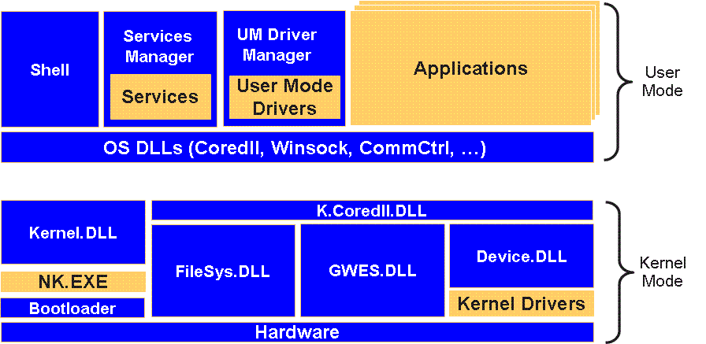

CE 6.0 Architecture¶

System Files/Components¶
K.xxx.DLL¶
These DLLs reflect the same DLLs without the K in front of it, but live in Kernel space. This way when porting old drivers from Windows CE 5.0 (where all drivers lived in user mode) the code can simply call the same API, but it does not need to perform a context switch. User mode calls are handled by Coredll.dll and calls from processes running in kernel mode are redirected to Kernel.DLL by K.Coredll.DLL so that the call stays in the same VM. This way the calls are way faster compared to Windows CE 5.0.
Any DLL that is use by both kernel-mode and user-mode processes will be loaded as both kernel-mode and user-mode.
Services¶
Services run in user-mode and are handled by the Services Manager.
Device Manager¶
The Device Manager (Device.DLL) runs in kernel-mode and loads the device drivers. It supports loading drivers on boot or on demand. Windows also provides a user-mode Device Manager for drivers installed after shipping for example.
NK.EXE¶
This used to be the kernel, but now it just contains a thin abstraction layer and compatibility layer, provided by the OEM. The actual Kernel now lives in Kernel.DLL.
Security¶
Windows CE 6.0 removed both the "all kernel mode" (running everything in kernel mode) feature and the trusted model (trusted and untrusted .EXEs and DLLs). It also does not have the Access Control List of newer desktop systems.
The system also provides a separate handle table for each process.
GWES¶
GWES provides graphical functionality.
Memory Layout¶
References¶
- Microsoft - Windows Embedded CE 6.0 Advanced Memory Management
- Microsoft - Windows Embedded CE Architecture